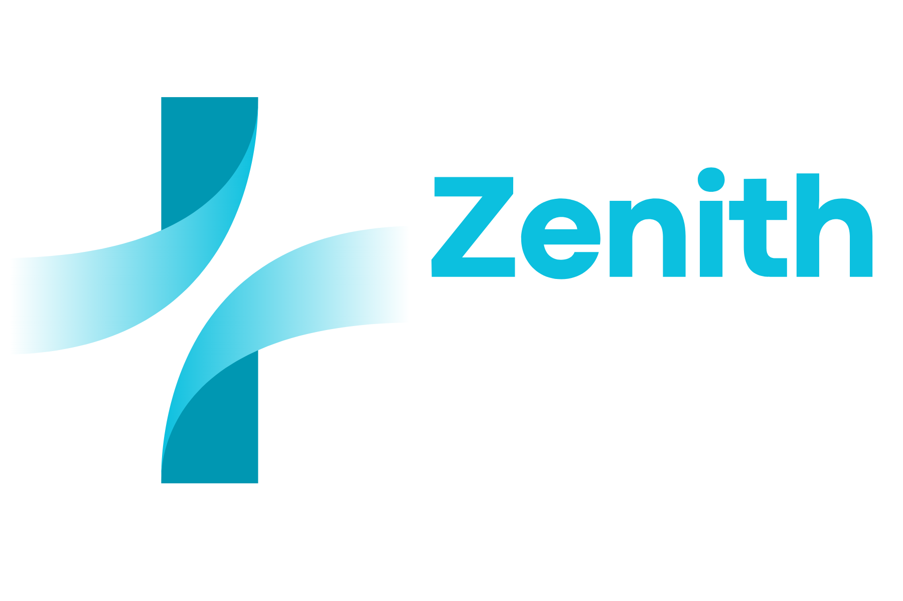

Escuta atenta
Espaço para dúvidas, história e necessidades individuais.

A clínica
Conheça os princípios que orientam nossa forma de acolher, informar e acompanhar cada pessoa.
Ouvir com atenção é parte essencial de cuidar.
A Zenith tem como propósito oferecer uma experiência de atendimento neurológico respeitosa e responsável. Valorizamos a comunicação clara para que cada pessoa possa compreender as orientações recebidas e conversar sobre os próximos passos.
Acreditamos que o acolhimento, a transparência e o respeito são fundamentais para uma relação de confiança entre pacientes e profissionais.
Conheça nossas especialidadesPrincípios para uma experiência de atendimento clara, respeitosa e responsável.
Espaço para dúvidas, história e necessidades individuais.
Informações compreensíveis e comunicação transparente durante o atendimento.
Compromisso com a ética, a privacidade e a segurança no atendimento.
Reconhecimento de que cada pessoa possui uma história e necessidades próprias.
Entre em contato para esclarecer dúvidas sobre informações e agendamento.